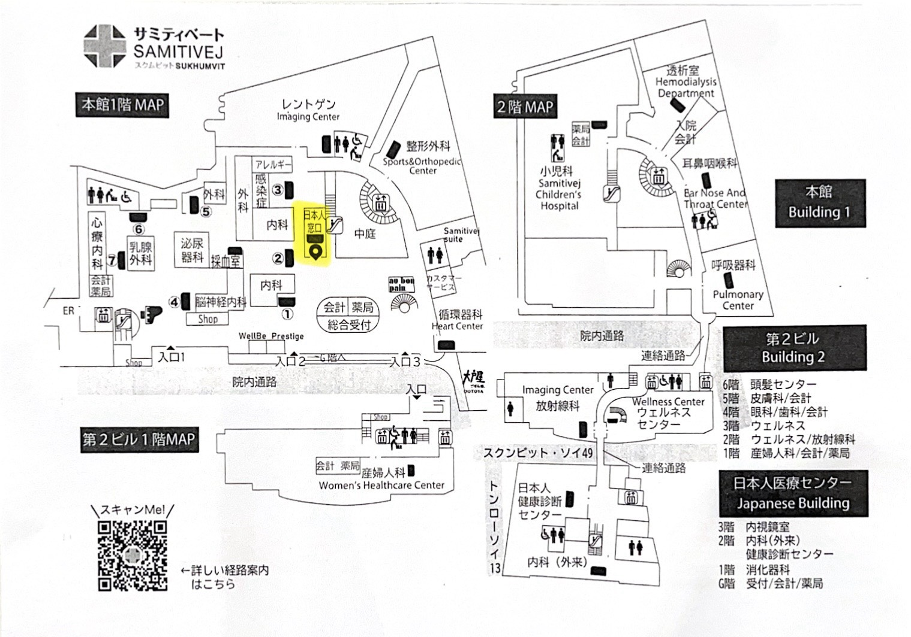
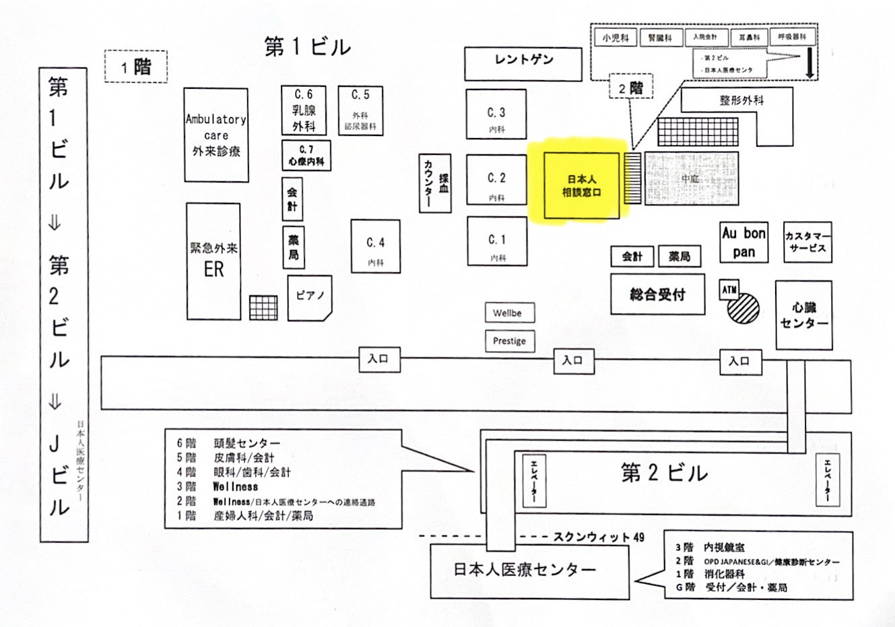

หมวดการแนะนำการเดินทาง
แผนที่และข้อมูลอาคาร


ขอขอบคุณรูปภาพประกอบจาก โรงพยาบาลสมิติเวช สุขุมวิท
*เพิ่มเติมข้อมูลชั้น (อาคาร Wellness)
- 📍 ชั้น 1 แผนกสูตินารีเวช
- 📍 ชั้น 2 Wellness / แผนกรังสีวิทยา
- 📍 ชั้น 3 Wellness
- 📍 ชั้น 4 จักษุ / ทันตกรรม
- 📍 ชั้น 5 ผิวหนัง
- 📍 ชั้น 6 ศูนย์ดูแลเส้นผม
*เพิ่มเติม อาคารญี่ปุ่น
- 📍 ชั้น G การเงิน / ห้องจ่ายยา
- 📍 ชั้น 1 แผนกทางเดินอาหาร
- 📍 ชั้น 2 ศูนย์ตรวจสุขภาพ / อายุรกรรม
- 📍 ชั้น 3 ห้องส่องกล้อง
小児科は、ここからエスカレーターで2階へ上がってください。左手にございます。
(Shōnika wa, koko kara esukarētā de nikai e agatte kudasai. Hidari te ni gozaimasu.)
แผนกเด็ก จากตรงนี้ขึ้นบันไดเลื่อนไปชั้น 2 จะอยู่ทางซ้ายมือค่ะ
耳鼻科は、エスカレーターで上がって、右に曲ってください。まっすぐ行くと左手にございます。
(Jibika wa, esukarētā de agatte, migi ni magatte kudasai. Massugu iku to hidari te ni gozaimasu.)
แผนกหู คอ จมูก ขึ้นบันไดเลื่อน เลี้ยวขวา เดินตรงไป จะอยู่ทางซ้ายมือค่ะ
皮膚科は、ここからエスカレーターで2階へ上がってください。まっすぐ進んで第2ビルへ行き、エレベーターで5階までお上がりください。
(Hifuka wa, koko kara esukarētā de nikai e agatte kudasai. Massugu susunde dai-ni biru e iki, erebētā de go-kai made o-agari kudasai.)
แผนกผิวหนัง จากตรงนี้ขึ้นบันไดเลื่อนไปชั้น 2 เดินตรงไปอาคาร 2 แล้วขึ้นลิฟต์ไปชั้น 5 ค่ะ
呼吸器内科は、エスカレーターで上がって右に曲がってください。まっすぐ行くと左手にございます。耳鼻咽喉科の近くです。
(Kokyūki naika wa, esukarētā de agatte migi ni magatte kudasai. Massugu iku to hidari te ni gozaimasu. Jibiinkōka no chikaku desu.)
แผนกทางเดินหายใจ ขึ้นบันไดเลื่อน เลี้ยวขวา เดินตรงไป อยู่ทางซ้ายมือ ใกล้แผนกหู คอ จมูกค่ะ
消化器科は、ここからエスカレーターで2階へ上がってください。まっすぐ進むと日本館の1階にございます。
(Shōkakika wa, koko kara esukarētā de nikai e agatte kudasai. Massugu susumu to Nihonkan no ikkai ni gozaimasu.)
แผนกทางเดินหายใจเดินอาหาร 2 เดินตรงไป จะอยู่ที่อาคารญี่ปุ่น ชั้น 1 ค่ะ
カウンター5は、まっすぐ進んでカウンター2の後ろを右に曲がると、左手にございます。
(Kauntā go wa, massugu susunde kauntā ni no ushiro o migi ni magaru to, hidari te ni gozaimasu.)
เคาน์เตอร์ 5 เดินตรงไปด้านหลังเคาน์เตอร์ 2 เลี้ยวขวา จะอยู่ทางซ้ายมือค่ะ
整形外科は、まっすぐ進んで左に曲がってください。
(Seikeigeka wa, massugu susunde hidari ni magatte kudasai.)
แผนกศัลยกรรมหระดูกและข้อ เดินตรงไปทางซ้ายมือ แล้วเลี้ยวซ้ายค่ะ
心臓センタ－は、まっすぐ進むと出口の近くにございます。
(Shinzōsenta wa, massugu susumu to deguchi no chikaku ni gozaimasu.)
แผนกหัวใจ เดินตรงไป จะอยู่ใกล้ทางออกค่ะ
レントゲンは、右に曲がってまっすぐ進み、一番奥にございます。
(Rentogen wa, migi ni magatte massugu susumi, ichiban oku ni gozaimasu.)
เอกซเรย์ เลี้ยวขวา เดินตรงไปจนสุดทางค่ะ
カウンター4は、まっすぐ進んで右に曲がると、ピアノの向かいにございます。
(Kauntā yon wa, massugu susunde migi ni magaru to, piano no mukai ni gozaimasu.)
เดินตรงไปเลี้ยวขวา เคาน์เตอร์ 4 อยู่ตรงข้ามเปียโนค่ะ
トイレは、左に曲がってまっすぐ進んでください。
(Toire wa, hidari ni magatte massugu susunde kudasai.)
ห้องน้ำ เลี้ยวซ้ายแล้วเดินตรงไปค่ะ